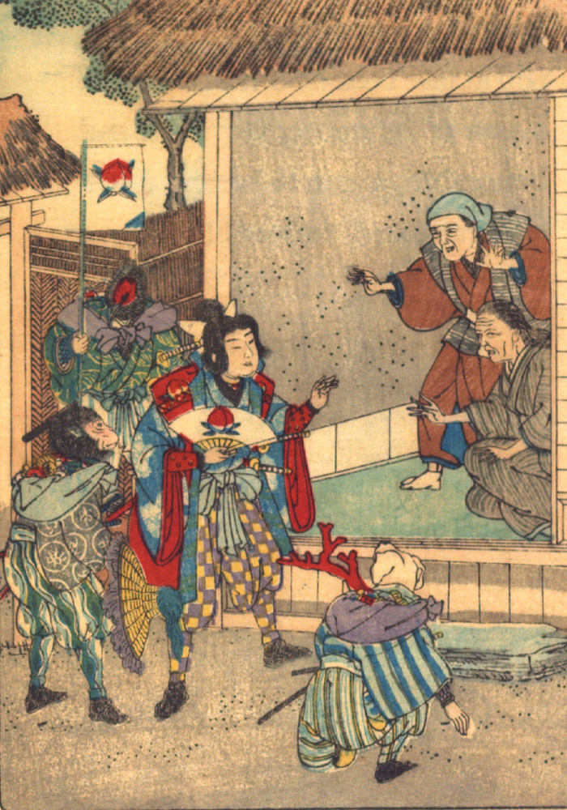

家に帰りついた桃太郎一行。育ての親の老人と老婆が、彼らを出迎えている。犬、猿、雉は肩に宝物を入れた包みを背負っている。
著作者：David Thompson／出典：親書誌：U426_nichibunken_0116：Momotaro／日付：2006／資源識別子：U426_nichibunken_0116_0005_0000
Copyright (c)2010- International Research Center for Japanese Studies, Kyoto, Japan. All rights reserved.